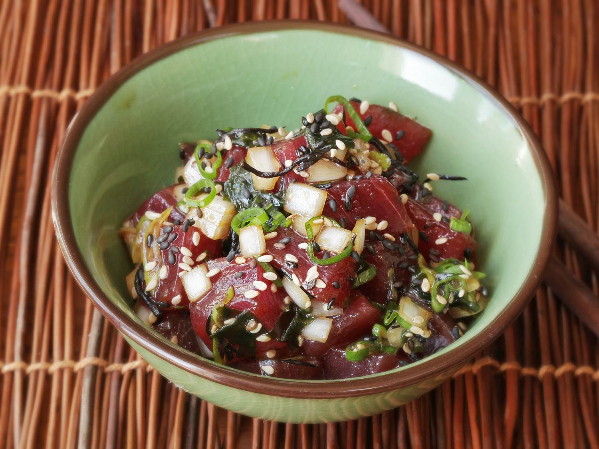

Lets make POKÈ!

Today we will be making traditional Pokè
Ingredients
- 2 tablespoons of mirin
- 1 tablespoon toasted sesame seeds
- 1 small shallot, cut into strips
- 3 cloves garlic, crushed
- 1 teaspoon freshly grated ginger
- 1 teaspoon sesame oil
- 1 teaspoon red pepper flakes
- 1 teaspoon sriracha sauce
- 1 pound sush-grade, tuna cut into small cubes
- 1 avocado, chopped
- 1/2 cup low sodium sauce
Directions
- Combine soy sauce, mirin, sesame seeds, shallot, garlic, ginger, sesame oil, red pepper flakes, and sriracha sauce in a medium bowl. Whisk well.
Add tuna and avocado; stir gently to coat with marinade.